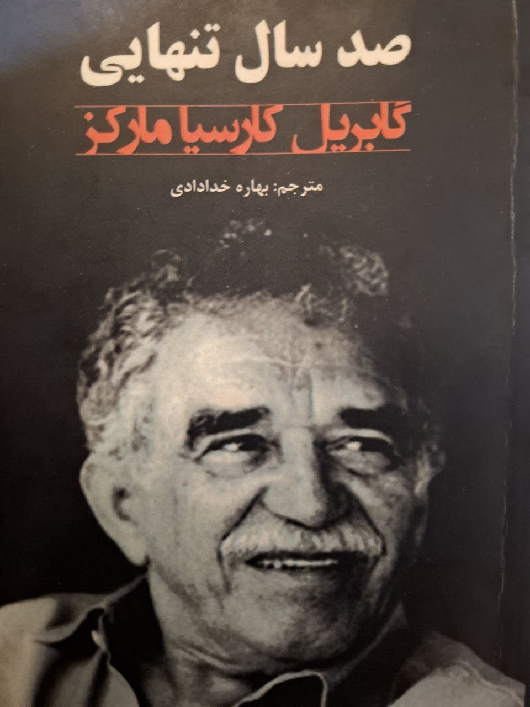

چهل و پنج روز عذاب با صد سال تنهایی
آمده بودم مرخصی. تقریبا یک هفته فرصت استراحت (و خوابیدن) داشتم. سه چهار روز پشت سر هم خوابیدم. روز پنجم به فکرم رسید که ایام ملالآور خدمت را اندکی قابل تحملتر کنم. به کتابخانه رفتم. از پسر جوانی برای خرید کتاب راهنمایی خواستم. از آن نوع راهنماییای که «خودت الان چه میخوانی؟». آن پسر کتاب «صد سال تنهایی» گابریل گارسیا مارکز را معرفی کرد. بدون اینکه کتاب را ورق بزنم، کارت کشیدم و به خانه برگشتم.

بعد از تمام شدن مرخصی به یگان محل خدمتم برگشتم. شروع به خواندن کتاب کردم. حدودا ده صفحه از کتاب را خوانده بودم که متوجه ترجمه بسیار بد کتاب شدم اما نه در این مورد و نه در موارد دیگری که در طول توقف برای ما پیش میآمد کاری از من و ما ساخته نبود. از طرفی هم وقتی، به هر زحمتی که شده، حدود ۵۰ صفحه از کتاب را خواندم جذب داستان شدم. بسیاری از قسمتها را حدس میزدم.
فوت بسیار نامناسب، حروفچینی فاجعه و از همه فاجعهتر، ترجمهای که بیشتر به زبان آلمانی شبیه بود تا فارسی. یکی دیگر از همخدمتیهایم مرا مشغول مطالعه دید. او هم که جوانی علاقهمند بود، تقاضا کرد کتاب را به امانت بگیرد. ما دو نفر در دو شیف مختلف کمین بودیم. تنها دقایقی در صبح و عصر در هنگام تعویض شیفت میتوانستیم همدیگر را ببینیم و چند کلمه با هم صحبت کنیم.
عصر همان روزی که کتاب را به او امانت دادم، در موقع تعویض کمین چند دقیقهای همکلام شدیم. با حالتی بین خوشحالی، عصبانیت و افسوس گفت: «مرتضی این چی چی نوشته؟» گفتم: «اگر متوجه شدی به من هم بگو». این کار هر روز ما شده بود. در آن زمان کوتاه ملاقات، او درباره حوادث داستان حدسهایی میزد و من هم برداشتهای خودم از داستان را داشتم.
بعد از چند روز هماهنگ کردیم که هر دو هر روز صفحات مشخصی از کتاب را بخوانیم و نظرات همدیگر را جویا بشویم. یک روز نظرها آنقدر متفاوت شد که هر دو شک کردیم که آیا کتاب یکسانی را میخوانیم. برای آنکه چارچوب داستان را متوجه شوم و مابقی را حدس بزنم، مجبور بودم هر قسمت را چندین بار بخوانم.
تمام آن ۴۵ روز را در حسرت خواندن و درک جزئیات این داستان کمنظیر گذراندم. بعدا که کتابی با ترجمه بهتر گرفتم، متوجه شدم در آن ۴۵ روز من و آن همخدمتی برای درک داستان چه عذابی کشیدیم. آن سطح نازل از ترجمه و چاپ کتاب و آن ۴۵ روز عذاب و آن تفسیرهای متفاوت از یک کتاب، همگی باعث شدند در هنگام خرید کتاب از قبل تحقیق کنم. درباره نویسنده، درباره مترجم، درباره ناشر. حتی اگر امکانش فراهم باشد چند صفحه از کتابی را که قصد خریدش کردهام، ورق میزنم.
این موضوع آنقدر برایم اهمیت داشته و دارد که کتاب «از کتاب» آقای «محمدرضا شعبانعلی» را تهیه کردم و چند بار خواندم تا بتوانم کتابهایی مفید از مترجمانی دقیق و ناشرانی آبرومند خریداری کنم. بعد از این سالها هنوز نتوانستهام خاطره ۴۵ روز عذاب با ۱۰۰ سال تنهایی را فراموش کنم.